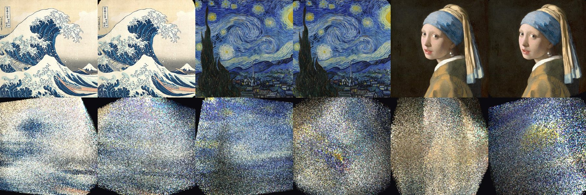
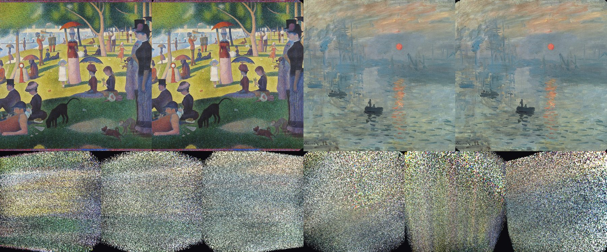
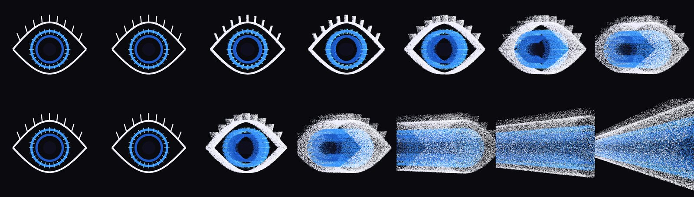

Hidden in Plain Sight
How we hid famous paintings inside clouds of floating paint specks, so that each one appears from exactly one place in 3D, and how we fit up to three paintings into a single cloud.
 Secret spot 2: The Starry Night
Secret spot 2: The Starry NightIn this article
An old trick in a new medium
Near the bottom of Hans Holbein’s The Ambassadors (1533) there is a long grey smear. Walk to the right-hand edge of the painting, look back along the canvas, and the smear becomes a skull. Painters call this anamorphosis: a picture that only reads from one point. Felice Varini does the same thing at the scale of buildings, painting fragments across walls, stairs and roofs that snap into a clean circle or square from one spot in the street.
Both are tied to a surface. The canvas or the wall decides where the paint can go. We wanted to see what happens when the paint is free to float anywhere in space.
Our medium is 3D Gaussian splatting (3DGS), the representation behind many recent 3D captures. A 3DGS scene is a list of small, coloured, semi-transparent Gaussian blobs, and a fast rasteriser turns it into an image from any camera. Normally you fit the blobs to photos of a real place. We build a cloud from scratch instead, with one goal: from almost everywhere it looks like coloured noise, and from one secret spot the specks line up into a painting.
That part turns out to be easy. The real question in this project was a different one:
Can one cloud of paint hold several paintings, each with its own secret spot?
It can. Our gallery has clouds that hide two paintings a quarter turn apart, and one that hides three: The Great Wave from the front, The Starry Night from the side and Girl with a Pearl Earring from above. Each is sharp from its own spot (SSIM around 0.95) and scrambles as you walk away. This article walks through how we got there, including the parts that failed.
One painting: scatter it along the rays
Start with a single painting and a single secret camera: a pinhole camera with intrinsics \(K\) and pose \((R, \mathbf{o})\), looking at the centre of an empty scene. Every pixel \((u, v)\) of the painting defines a ray, its line of sight:
Anything placed anywhere on that ray lands on pixel \((u, v)\) in the secret view. So for each painting pixel we put one tiny Gaussian, coloured like the pixel, at a random depth along its ray. From the secret camera, the specks tile the painting. From anywhere else, specks that shared a pixel slide apart.
Why the picture falls apart when you move
This is motion parallax, the same effect that makes stereo work. If the camera steps sideways by \(\Delta\), a point at depth \(z\) shifts in the image by \(f\Delta / z\) pixels, where \(f\) is the focal length in pixels. Two specks that shared a pixel but sit at depths \(z_1\) and \(z_2\) end up
pixels apart. The wider the spread of \(1/z\), the faster the painting dissolves. We draw depth log-uniformly between \(z_n = 3\) and \(z_f = 30\) scene units, with the secret camera at \(\sqrt{z_n z_f} \approx 9.5\) units from the centre:
Log-uniform puts the same number of specks in every octave of depth, so near and far specks both contribute to the scramble.
Here is the idea seen from above, with a seven-dot “painting”. Drag the slider to walk the second camera around the specks.
A toy version seen from above: seven picture dots, four specks on each dot’s line of sight. From the secret spot, every speck lands on its own dot; from anywhere else, near and far specks slide past each other. Real clouds use hundreds of thousands of specks.
Keep the specks small
Our first test supervised only the secret view, and the optimiser did the obvious thing: it grew the Gaussians large and opaque. Big flat blobs fill a coherent cone of space, so from nearby angles we saw a smeared yellow face instead of noise (the figure in What didn’t work). The fix is to cap each Gaussian’s size in secret-view pixels at its own depth. One pixel at depth \(z\) covers \(z/f\) world units, so the standard deviation is kept inside
where \(p\) is the free parameter. A far speck can be physically larger than a near one, but every speck covers about one pixel from the secret spot. The floor came later, from Mip-Splatting (see the browser section).
Fit the colours, not the positions
Placement already gives a good picture, but overlapping specks and sub-pixel offsets blur it. A short fit in gsplat cleans it up. We optimise each speck’s colour, opacity and size with Adam for about 1000 steps, minimising the usual 3DGS loss between the render \(I\) and the painting \(T\):
Positions stay frozen. That is a deliberate choice: the geometry, and with it the scramble from every other angle, is fixed by the placement step, and the fit only touches appearance.
On a test drawing (an eye, about 135k specks) the secret view reaches SSIM 0.997. The off-views are specks, not blobs. But look at them from the side:

Rows stay rows
From the side, the cloud reads as the picture extruded into a tube of horizontal streaks. That gives the trick away. We first blamed the depth range, so we tried keeping only the part of each ray inside a ball around the centre, hoping the side view would look like a round puff of dust. It looked almost the same. The reason is geometry, and it has nothing to do with how depth is chosen.
When the viewer moves, a speck seen at pixel \(\mathbf{p}\) by the secret camera can only appear somewhere on its epipolar line in the new view; its depth only decides where on that line. For a pure sideways step the epipolar lines are exactly horizontal, so every speck stays in its image row. For an orbit around the vertical axis with both cameras at the same height, the epipole sits on the horizon row; the epipolar lines are horizontal there and fan out slowly towards the top and bottom of the frame. Either way, depth can shuffle a row’s pixels left and right, but it cannot move them to another row.
Depth can scramble a picture’s columns. It can never scramble its rows.
Physical anamorphic art has the same property, which is why a Varini piece seen from the wrong spot still looks like coloured fragments rather than random noise. Text and large flat shapes keep the most row structure, so they stay partly readable from the side:

We could have fought this, for example by painting onto a surface instead of a volume. Instead the observation became the key to the rest of the project. If the side view has structure anyway, why not make it show something on purpose? We come back to this in Two paintings in one cloud. First, a question every visitor to the gallery runs into.
How far can you wander?
If a painting appears only from one mathematically exact point, nobody will find it. If it appears from everywhere, it is not hidden. The interesting quantity is the size of the reveal zone: how far you can step away from the spot and still recognise the painting.
A metric that doesn’t lie
Our first instinct was SSIM between the render and the painting. It failed in an instructive way: even orbited 120° away, with the picture completely gone, SSIM stayed around 0.5, because the dark background in the render matches the dark background around the picture. SSIM was rewarding us for the empty space.
So we score only what the picture contributes, only where the picture is. Let \(I_v\) be the render from view \(v\), \(B\) the plain background, \(T\) the painting and \(M\) its pixels (its “ink”). With \(a = \mathrm{gray}(I_v - B)\) and \(b = \mathrm{gray}(T - B)\), each made zero-mean over \(M\), the recognisability is a normalised cross-correlation:
It is 1 when the picture is fully there and close to 0 when it is scrambled. Its weakness is that it is pixel-aligned: a recognisable picture shifted by two pixels scores low. For a reveal-zone curve that is acceptable, because the picture really does slide apart as you move.
Training with a wobbly camera
Illusion3D makes multi-view illusions robust by jittering the camera during optimisation. We borrowed that. At step \(t\) of \(T\), the secret camera’s centre is moved by a random offset drawn uniformly inside a ball of radius
with \(r_{\max} = 0.3\) units, about 3% of the viewing distance, and the camera still looking at the centre. The radius ramps up over the first half of training, so the fit first gets the picture right and then learns to hold it together under small moves.
| Sideways step | 1% | 2% | 5% | 10% | 50% |
|---|---|---|---|---|---|
| No jitter | 0.85 | 0.70 | 0.46 | 0.31 | 0.14 |
| Jitter, \(r_{\max} = 0.3\) | 1.00 | 0.99 | 0.90 | 0.72 | 0.16 |
Jitter roughly doubles recognisability at a 5% step (0.46 → 0.90), and the painting still vanishes by 50%. The price at the exact spot is small: SSIM drops from 0.997 to 0.973.

There is no free lunch, though. Specks far from the middle depth have the most parallax, so to survive the wobble the optimiser simply fades them out. The jittered fit keeps only 71k of its 136k specks visible, and the cloud flattens towards a billboard. Jitter trades surprise for discoverability: a wider zone, but a cloud that looks less like random dust. We treat it as a knob and report the trade-off rather than hide it. The gallery scenes are trained without jitter; the viewer’s warmer/colder meter and the “show me” button help people find the spots instead.
Two paintings in one cloud
The honest feedback on the one-painting version was blunt: “the dots just form a cylinder; it doesn’t seem that impressive.” Fair. Every speck lies on one of the secret camera’s lines of sight, and from the side you see that bundle of lines. Rows stay rows, so the side view is structured whatever we do. The idea is to stop fighting the structure and give it a job: make the side view show a second painting.
Stereo triangulation, run backwards
In stereo, you are given a pixel in each of two cameras and you triangulate the 3D point that projects to both. Here we run it backwards. We choose 3D points so that their projections land where we want, on painting A’s pixels in camera A and on painting B’s pixels in camera B, a quarter turn away.
A point \(\mathbf{X}\) is a valid speck only if every secret camera sees ink of its own painting there. Writing \(\pi_k\) for camera \(k\)’s projection and \(\alpha_k\) for painting \(k\)’s alpha mask:
The set of such points is the intersection of the cameras’ cones of sight: a visual hull, the same object that space carving and Mitra and Pauly’s Shadow Art compute. Shadow Art uses it to build a sculpture whose shadows form several images. We use it for colour, and add a twist that shadows can’t have: each speck may show a different colour toward each camera.

Sampling the hull
We never build a voxel grid. Instead we sample. Pick a random ink pixel in camera \(s\), take its unit ray direction \(\mathbf{d}\) from camera centre \(\mathbf{o}\), and intersect it with a ball of radius \(R = 0.45\,D\) around the scene centre \(\mathbf{c}\), where \(D = 10\) is the camera distance. With
the ray is inside the ball for \(t \in [\,b - h,\; b + h\,]\). We draw \(t\) uniformly on that chord, set \(\mathbf{X} = \mathbf{o} + t\,\mathbf{d}\), project it into every other camera and keep it if it lands on ink there (and in front of the camera). Specks are seeded evenly from each camera’s ink, so no painting gets more than its share. In code it is a few vectorised lines:
# condensed from hips/multi_view.py: carve_multi()
pix = sample_ink_pixels(painting[s], m) # random ink pixels
d = unit_rays(pix, K, cam[s]) # world-space rays
b = (c - o) @ d
h = sqrt(R**2 - |c - o|**2 + b**2)
X = o + d * uniform(b - h, b + h) # on the chord
keep = all(on_ink(painting[k], project(X, cam[k]))
for k != s)The ball (radius 4.5 units, cameras 10 units out) keeps the cloud compact and every speck well away from every camera, so no single speck can loom large from a secret spot.
Why the paintings are square
Rows stay rows now works in our favour, but it also sets a constraint. The two cameras orbit about the vertical axis at the same height, so (to a good approximation) a speck on row \(v\) of painting A also lands near row \(v\) of painting B. If painting A has ink in a row where painting B has none, those pixels can never be covered. This is the epipolar constraint again: matches can only happen along corresponding lines. Our fix is simple. We use square crops of each painting that fill the whole frame, so every row has ink in both views. Ink coverage, the share of each painting’s pixels that have a speck within one pixel, is then 0.98 to 0.995 in every scene we have measured.
One speck, two colours
A speck in the hull is wanted by both paintings, and they rarely agree on its colour. A plain RGB speck would have to compromise. 3DGS already has a fix built in: view-dependent colour through spherical harmonics (SH). At degree 1, a speck’s colour seen along unit direction \(\mathbf{d} = (x, y, z)\) (from the camera to the speck) is, per colour channel,
with the 3DGS constants \(C_0 \approx 0.282\), \(C_1 \approx 0.489\) and four learned coefficients \(k_0, \dots, k_3\). Regroup the terms and it is just a base colour plus a linear function of the viewing direction:
Asking the speck to show colour \(c_k\) toward camera \(k\) gives one linear equation \(a + \mathbf{g}\cdot\mathbf{d}_k = c_k\) per camera, in four unknowns. With two cameras 90° apart there is plenty of slack. With three roughly perpendicular cameras (front, side, top), the three directional terms of \(\mathbf{g}\) can match three colours independently and the base \(a\) is still free to keep everything in range. A fourth camera makes the system exactly determined: solvable for non-coplanar directions, but with no slack left and the solution often outside \([0, 1]\), where it gets clipped. That makes three the natural limit we expect for SH degree 1, and why the capacity study also tries degree 2.
The same algebra predicts what happens between the spots. Take two orthogonal directions \(\mathbf{d}_A, \mathbf{d}_B\) and the halfway direction \(\mathbf{m} = (\mathbf{d}_A + \mathbf{d}_B)/\sqrt{2}\). Then
Halfway round, every speck shows a blend of its two target colours. Because neighbouring specks come from unrelated parts of the two paintings, the blend looks like noise: good for hiding, but a muddy noise. With degree 1 the only way to darken it is a larger base colour \(a\), and the same algebra shows that brightens the opposite side of the cloud. Higher SH degrees have the freedom to do better.
One joint fit
As before, a short gsplat fit cleans up. The base colour starts at the average of the colours the cameras want, the directional terms start at zero, and the loss sums over all secret views:
Sizes are bounded by \([0.4, 1.5]\) pixels at the distance to the nearest secret camera, positions stay frozen, and specks whose opacity falls below 0.05 are dropped on export. The gallery scenes use 1500 Adam steps at 768×768 per view.
Results
Our first pair, The Great Wave and The Starry Night a quarter turn apart, used 320k specks and 1000 steps with no size floor. It reached SSIM 0.93 and 0.90 at the two spots, and away from the spots the views were scrambled. The tube was gone.

A second version with 500k specks, the size floor and 1500 steps raised that to 0.97 and 0.95, with 99.5% coverage. Then we added a third camera, looking down from 80° above, with Girl with a Pearl Earring:


| Scene | Specks (sampled / kept) | Coverage | SSIM |
|---|---|---|---|
| Wave + Starry Night, first version90° apart, 1000 steps | 320k / 306k | 0.98 · 0.98 | 0.93 · 0.90 |
| Wave + Starry Night, second version90° apart, size floor, 1500 steps | 500k | 0.995 | 0.97 · 0.95 |
| TrioWave, Starry Night, Pearl Earring | 600k / 555k | 0.991 · 0.992 · 0.987 | 0.96 · 0.95 · 0.95 |
| Pair IGrande Jatte, Impression, Sunrise | 500k / 472k | 0.995 · 0.995 | 0.95 · 0.96 |
| Pair IIThe Kiss, The Scream | 500k / 481k | 0.995 · 0.995 | 0.96 · 0.98 |
| Pair IIIBirth of Venus, Night Watch | 500k / 474k | 0.995 · 0.995 | 0.97 · 0.99 |
| SoloMona Lisa; one painting, one camera | 400k / 379k | 0.997 | 0.95 |
One honest caveat: “scrambled in between” is a visual judgement from contact sheets like the ones above. The reveal-zone curves we measured with NCC are still from the single-picture test scenes.
The gallery has five clouds, and each painting appears in exactly one: Solo (one painting, built by the same code with a single camera, so you can see the tube for yourself), Pair I, Pair II and Pair III (two each) and Trio (three). The gallery keeps the paintings’ names hidden until you find them; the table above gives them away, so try the gallery first.

The three-painting cloud, live.
or open it full screenPushing it: four studies
The gallery shows that the method works. These studies ask how far it works. All of them use the same baseline: The Great Wave and The Starry Night, 500k sampled specks, SH degree 1, 1000 steps (the gallery scenes use 1500), and change one thing at a time. The baseline run is shared by all four studies, so its numbers appear in each table; grey cells are still running.
1. Separation: how close can two spots be?
At 90° the two cameras’ rays cross at right angles and the hull is well conditioned. As the second spot moves closer, the cones overlap more, the two colours a speck must show come from nearby directions, and the linear colour term has less room to tell them apart.
| Angle between spots | 90° | 60° | 45° | 30° | 15° |
|---|---|---|---|---|---|
| SSIM (Wave · Starry Night) | 0.967 · 0.948 | 0.953 · 0.936 | 0.944 · 0.926 | 0.936 · 0.915 | 0.929 · 0.901 |
2. Colour model: does view-dependent colour matter?
With SH degree 0 a speck has one colour from every direction, so the joint fit can only compromise between what the two paintings want. Degree 2 adds five more terms per channel, which could clean up the in-between views or spill over and hurt them.
| SH degree | 0 (one colour) | 1 (gallery) | 2 |
|---|---|---|---|
| SSIM (Wave · Starry Night) | 0.861 · 0.839 | 0.967 · 0.948 | 0.970 · 0.956 |
3. Capacity: how many paintings fit in one cloud?
Same speck budget, one to four paintings (front, side, top, and back for the fourth). The algebra above predicts a step at four for SH degree 1, so the four-painting cloud is run with degree 1 and degree 2.
| Paintings | 1 | 2 | 3 | 4 (SH 1) | 4 (SH 2) |
|---|---|---|---|---|---|
| SSIM at each spot | 0.988 | 0.967 · 0.948 | ? · ? · ? | ? · ? · ? · ? | ? · ? · ? · ? |
4. Budget: how many specks are needed?
Fewer specks mean smaller files and faster loading, but each speck is capped at 1.5 pixels, so too few leave holes.
| Specks sampled | 100k | 250k | 500k | 1M |
|---|---|---|---|---|
| SSIM (Wave · Starry Night) | ? · ? | ? · ? | 0.967 · 0.948 | ? · ? |
Making it run in a browser
The gallery is a static page: three.js plus the Spark splat renderer, reading a standard 3DGS PLY file and a small scene.json with each secret camera as an OpenCV camera-to-world matrix. (three.js cameras look down \(-z\) with \(y\) up, so the viewer converts with \(C_{\text{three}} = C_{\text{cv}} \cdot \mathrm{diag}(1, -1, -1, 1)\).) The hard part was making the browser show what we optimised.
The browser was quietly dimming our specks
Splat renderers add a small blur to every Gaussian so that tiny ones don’t alias. 3DGS adds 0.3 to the projected 2D covariance (in pixels squared); gsplat calls this the “classic” mode, and it is what we trained with. Spark’s default is the anti-aliased variant: it adds the blur and then lowers each splat’s opacity to compensate. For normal scenes that is invisible. For isolated specks about one pixel wide it darkened them by about 27%, and our paintings looked dull. The fix is one line:
// condensed from web/viewer.js: match gsplat's classic rasterisation
new SparkRenderer({ preBlurAmount: 0.3, blurAmount: 0.0, enableLod: false, ... })Two more settings matter. Level-of-detail is off, because it would merge neighbouring specks into blobs, exactly what we worked to avoid. Speck positions are stored at full 32-bit precision, because 16-bit centres made far specks jitter. With those in place we checked that the two-view SH degree-1 colours match between gsplat and Spark at both secret spots.
The size floor
Our first scenes let the optimiser shrink specks to almost nothing. Mip-Splatting calls these degenerate Gaussians: below about 0.3 pixels, what you see on screen is mostly the renderer’s blur kernel, not the speck, so the same scene looks different at a different screen resolution. In our early scenes 7 to 31% of specks were that small. Flooring every speck at 0.4 secret-view pixels removed the problem and, in the Wave and Starry Night pair, came with the jump from 0.93/0.90 to 0.97/0.95 (together with more specks and steps, so we can’t credit the floor alone).
File size, honestly
An uncompressed 3DGS PLY stores 26 floats per speck, about 100 bytes. Our scenes are 32 MB (306k specks), 49 MB (472k) and 58 MB (555k). That is heavy for a web page; each scene takes a few seconds to load on a good connection and longer on a phone. Quantising the colours and sizes would cut this a lot, and is the first thing we’d do with more time.
Engineering notes
All training ran on a free Colab T4, driven from a laptop through the Colab command-line tool. gsplat compiles its CUDA kernels on first use, which took about 20 minutes on Colab’s 2-CPU machine, so we built the library once and load the prebuilt binary through a small shim. Colab reclaimed the machine once in the middle of training, so we back up checkpoints off the VM. A suite of 36 CPU tests covers the parts that are easy to get silently wrong: camera conventions, the 3DGS PLY layout (SH coefficients are stored channel-major), projection and carving.
What didn’t work
Most of what we know came from things going wrong. In order:
- Unconstrained Gaussians make blobs. With only the secret view supervised, the first fit grew large opaque Gaussians, and the side views showed a smeared face instead of noise. Lesson: judge an illusion by the views you don’t supervise. The size cap came from this.
- The tube. One painting per cloud is always an extruded picture from the side, because rows stay rows.
- The ball. Restricting specks to a ball around the centre, hoping for a round puff of dust, changed almost nothing. It was the wrong fix for a geometric property, but it explained the property, and the ball came back as the sampling volume for carving.
- A misleading metric. SSIM said the picture was half there at 120°, because of the shared dark background. We switched to masked NCC.
- A renderer that disagreed with the trainer. Spark’s default filter dimmed our specks by about 27%. Lesson: check the deployed renderer against the training renderer, pixel for pixel, before tuning anything else.
- A disappearing GPU. Colab took the VM back mid-run. Back up checkpoints off the machine.


What we borrowed
Very little here is new on its own. What we contribute is the combination: visual-hull carving plus view-dependent splat colour, so that several full-colour paintings share one explorable cloud, together with a measured reveal zone and a browser renderer matched to the trainer. These are the pieces we took and where they went.
| Work | What we took |
|---|---|
| Shadow ArtMitra & Pauly, SIGGRAPH Asia 2009 | The shadow hull: keep only what is consistent with every view. Our carving is its colour version. Its registration of the input pictures before carving is on our next-steps list. |
| Multi-view Wire ArtHsiao, Huang & Chu, TOG 2018 | The same consistency-across-views carving, for wire sculptures. Its greedy completion of uncovered pixels and 2-pixel hit tolerance are on our next-steps list. |
| Illusion3DFeng et al., 2024 | Scheduled camera jitter during optimisation, our reveal-zone knob. |
| Mip-SplattingYu et al., CVPR 2024 | Why sub-pixel Gaussians look different at other resolutions; the size floor. |
| 3D Gaussian Splatting and gsplatKerbl et al., SIGGRAPH 2023; Ye et al., 2024 | The representation, the SH colour model and its conventions, the L1 + D-SSIM loss, and the differentiable rasteriser we train with. |
| Visual Anagrams and Diffusion IllusionsGeng, Park & Owens, CVPR 2024; Burgert et al. | Multi-view illusions as an optimisation problem, and how to evaluate them: score each view against each target. Diffusion Illusions’ warning that pixel-space optimisation hides information in brittle high frequencies matches our un-jittered reveal zone. |
| ComplicitSplatHull et al., 2025 | Evidence that view-dependent SH colour can hide content by direction, and that low-order SH spills over to nearby angles. |
On the art side, the lineage runs from Holbein’s The Ambassadors to Felice Varini’s painted buildings. Shadow Art’s glass cube of “voxel soup” that casts three shadows is probably the nearest physical relative of our clouds.
Limitations and next steps
- The in-between views are noisy but muddy. SH degree 1 forces every in-between colour to be a blend of the targets (the midpoint formula above). SH degree 2 or 3 with a weak loss toward the background at in-between angles might make the cloud darker and cleaner between spots, at the risk of spill-over noted by ComplicitSplat.
- Pairs must share rows. Full-frame square crops make this easy for paintings, but text or a small object against a big background would lose coverage. Registering the pictures before carving (searching each one’s vertical offset and scale, as Shadow Art does) and greedily adding specks for uncovered pixels (as Wire Art does) would fix most of it.
- One painting still looks like a tube. Placing the specks on a surface (a sphere or a mesh) instead of in a volume would make the side view read as a painted object, the way a Varini piece does.
- The reveal zone is measured on test drawings. The painting scenes need the same NCC curves, ideally alongside a small “can you recognise it?” user study, and field-of-view jitter to cover moving forward and back.
- Files are big. 30 to 60 MB per scene, uncompressed. Quantisation or a compressed splat format is the obvious fix.
Credits
The paintings
All ten are public domain, from Wikimedia Commons; we use square crops.
- The Great Wave off Kanagawa, Katsushika Hokusai, c. 1831 source
- The Starry Night, Vincent van Gogh, 1889 source
- Girl with a Pearl Earring, Johannes Vermeer, c. 1665 source
- Mona Lisa, Leonardo da Vinci, c. 1503–1519 source
- A Sunday on La Grande Jatte, Georges Seurat, 1884–86 source
- Impression, Sunrise, Claude Monet, 1872 source
- The Kiss, Gustav Klimt, 1907–08 source
- The Scream, Edvard Munch, 1893 source
- The Birth of Venus, Sandro Botticelli, c. 1485 source
- The Night Watch, Rembrandt van Rijn, 1642 source


Tools
gsplat and PyTorch for fitting; three.js and Spark for the browser viewer; Google Colab (T4 GPU) for training; NumPy, Pillow and matplotlib for everything else; KaTeX for the equations on this page.
How this was made
We used coding agents heavily, as the course encourages, for code, Colab experiments and drafting this page. Every experiment and change of direction is recorded in our process log (PROCESS.md in the repository), which this article condenses.